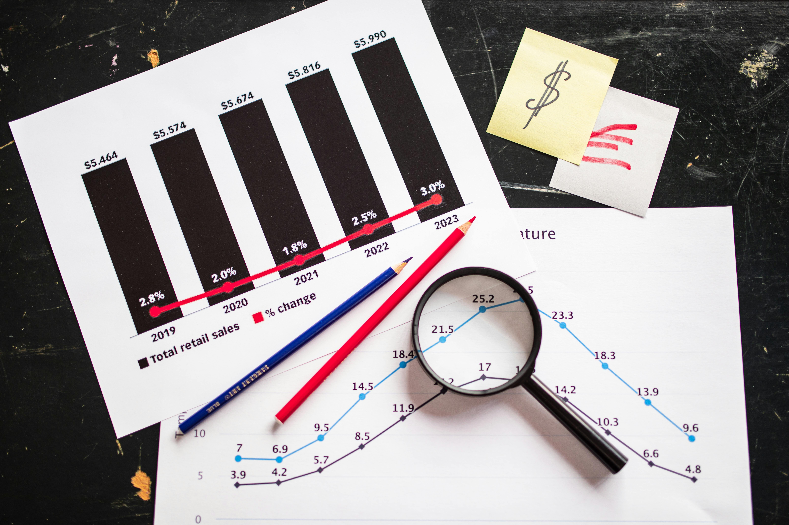
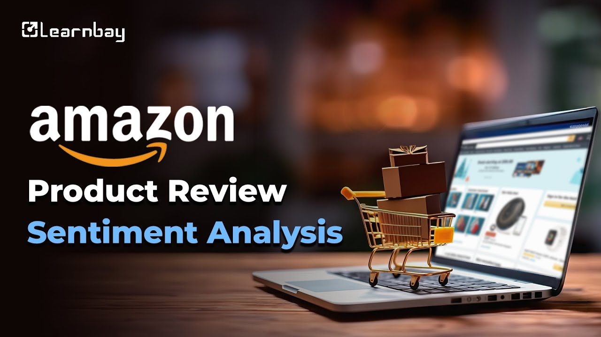

Performed comprehensive EDA on large datasets using
Pandas, NumPy, Matplotlib, and Seaborn.
Identified key trends, cleaned missing values, and visualized patterns
to generate actionable insights for decision-making.

Built an interactive Power BI dashboard on UPI transactions with details like
amount, status, banks, cities, and devices.
Applied data cleaning and a DAX measure to track
total transactions, success rate, age groups, gender, and city-wise usage.

Performed sentiment analysis on Amazon product reviews using
Python, NLP, and Machine Learning.
Preprocessed text data, applied classification models, and
visualized customer opinions as positive, neutral, or negative.
The project provides insights into customer satisfaction, product quality,
and brand perception.
Cleaned and analyzed the New York City Airbnb 2019 dataset.
Detected and handled missing data, removed outliers using the IQR method,
and visualized patterns with boxplots and other EDA techniques.
The project uncovers insights into pricing trends, availability, and neighborhood dynamics.
Built a machine learning model to predict wine quality
using physicochemical properties.
Applied EDA to explore correlations, cleaned and scaled data,
and trained models like Logistic Regression, Random Forest,
and Linear Regression.
Evaluated model performance and highlighted key factors influencing wine quality.